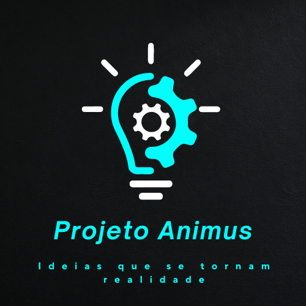

Animus: Tecnologia e Inovação
O Projeto Animus é uma iniciativa voltada à inovação em tecnologia, focando no desenvolvimento de soluções avançadas que facilitam e enriquecem a interação do usuário. Neste espaço, exploramos e implementamos estruturas de dados complexas para criar um site interativo e funcional que não apenas atenda às necessidades de nossos usuários, mas também proporcione uma experiência enriquecedora e educativa.
Serviços
Educação Interativa
Aprenda sobre diferentes estruturas de dados através de tutoriais interativos e exemplos práticos. Explore árvores, listas encadeadas, grafos e mais, com aplicações no mundo real.
Análise e Consultoria
Oferecemos serviços de consultoria para ajudar sua empresa ou projeto a implementar soluções eficientes usando estruturas de dados avançadas. Transforme a teoria em prática com nossa expertise.
Ferramentas Personalizadas
Oferecemos serviços de consultoria para ajudar sua empresa ou projeto a implementar soluções eficientes usando estruturas de dados avançadas. Transforme a teoria em prática com nossa expertise.
Comunidade e Suporte
Junte-se à nossa comunidade de entusiastas da tecnologia. Compartilhe conhecimentos, esclareça dúvidas e colabore em projetos inovadores.